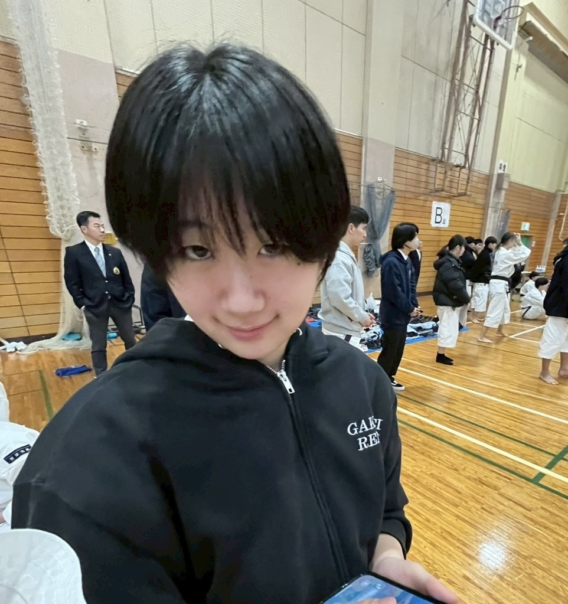

プロフィール
・学年：4年
・役職：渉外
・趣味：潜水
メッセージ
4年間お疲れ様でした！
あなたの背中を見て育った後輩は数知れず、、
例に漏れず俺も愛先輩にあてられた1人です。
先輩からは沢山のことを教えていただきました。
技術的なものから精神的なことまで、先輩がいたからこそ今の俺がいると思います！
気合いの入れ方から息抜きの仕方、先輩から教わったこと全てが今につながっています。
人生が進むたびにあの時先輩が言ってくれたことの大切さを実感できるんです。
だからまだまだ俺は先輩から教わったことを全部理解しているわけではないのかもしれませんが、いつの日か先輩のような人になれるように頑張っていきたいです。
先輩は皆の憧れです！どうかご自身に、自信を持って頑張ってください！
たくさんお世話になりました！どうか新しい門出に祝福が訪れますように。お仕事頑張ってくださいねー！
お時間あったら修練に顔だして、小手投げ教えてくださいTT